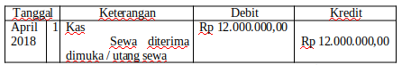
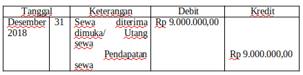
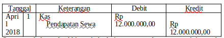
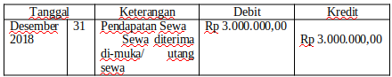

Contoh Soal :
Perusahaan Istana pada tanggal 1 April 2018 diterima pembayaran sewa kios Rp 12.000.000,00 untuk satu tahun. Maka bagaimanakah jurnal penyesuaian untuk tahun 2018?
Jawab :
a. Penerimaan pendapatan jika saat transaksi dicatat pendekatan Neraca (saat transaksi diakui sebagai utang).
Jurnal saat transaksi jika dicatat pendekatan Neraca

Pada akhir periode penyewa sudah menempati selama 9 bulan (dari 1 April 2018 sampai dengan 31 Desember 2018) berarti yang 9 bulan x Rp 1.000.000,00 = Rp9.000.000,00 merupakan pendapatan. Jurnal penyesuaian yang dibuat berarti mengurangi utang dirubah menjadi pendapatan. Hutang berkurang di debit dan pendapatan bertambah di kredit. Jurnal penyesuaiannya sebagai berikut:

b. Penerimaan pendapatan jika saat transaksi dicatat pendekatan Laba/ Rugi (saat transaksi diakui sebagai pendapatan).
Jurnal saat transaksi dicatat pendekatan Laba/ Rugi

Saat tutup buku pada akhir periode dari catatan pendapatan sewa ini yang benar-benar pendapatan adalah sebanyak yang sudah ditempati oleh penyewa yaitu selama sembilan bulan (dari tanggal 1 April 2018 sampai dengan 31 Desember 2018). Berarti sampai tutup buku pendapatan sewa yang sebenarnya = 9 bulan x Rp 1.000.000,00 = Rp 9.000.000,00. Catatan Pendapatan Sewa harus disesuaikan, maksudnya Pendapatan Sewa dikurangi dan mengakui utang dari sewa yang belum ditempati selama 3 bulan. Pendapatan berkurang di debit dan utang bertambah di kredit. Jurnal penyesuaian yang dibuat sebagai berikut:

Setelah disesuaikan maka saldo Pendapatan Sewa menjadi Rp 9.000.000,00 dan Sewa Diterima dimuka bersaldo Rp 3.000.000,00 sehingga pada saat laporan keuangan disusun sudah menunjukkan keadaan yang sebenarnya.